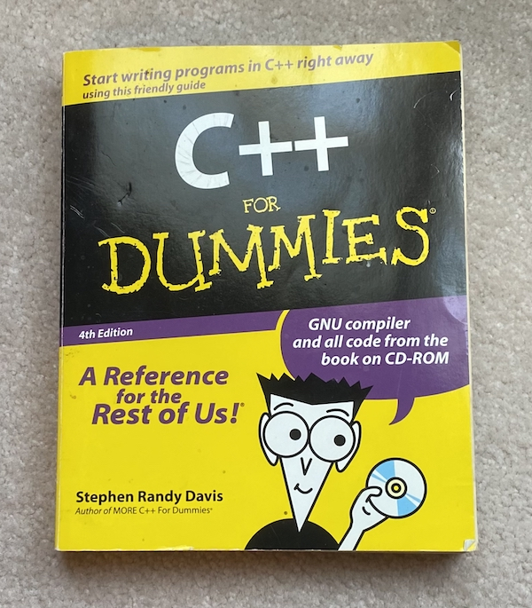
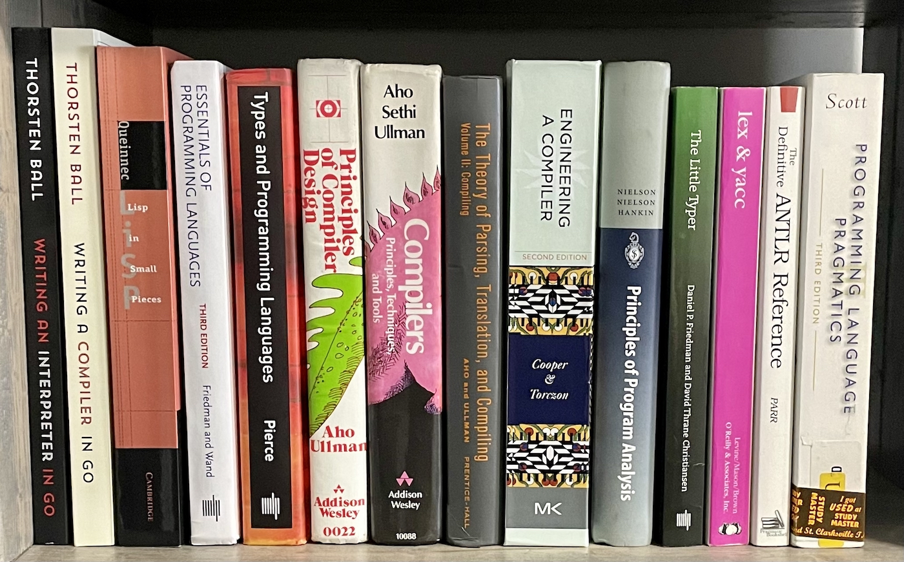
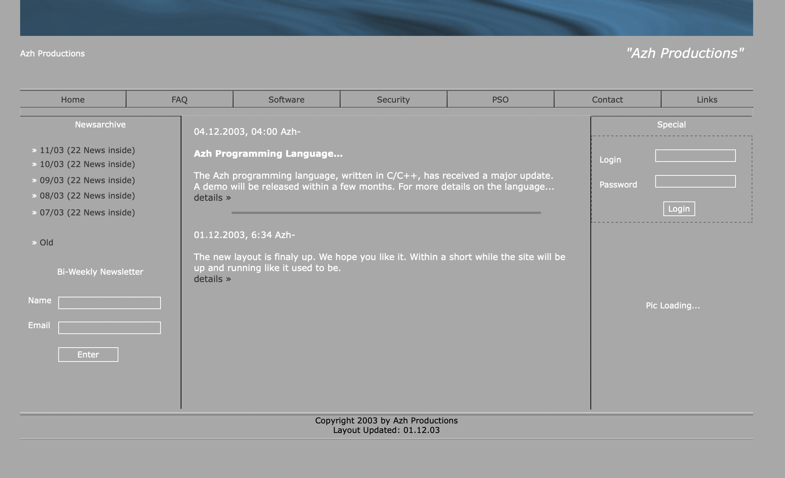
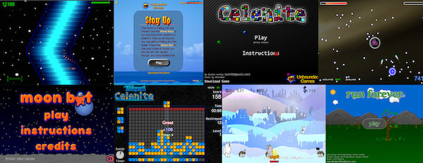
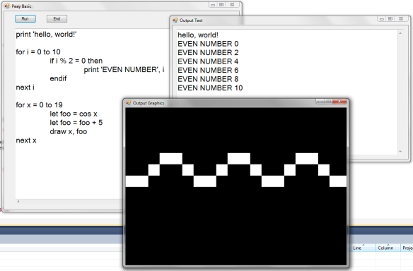

I work on AI + dev tools.
Recently, I was on John Lam's podcast, Pivotal Moments. He interviews folks about the big changes in their careers, and I happened to be his first guest. We discussed my transition from academia to industry and the "prestigious" grant I turned down. He already has 12 episodes out so definitely give it a listen!
It got me thinking about the other pivotal points in my career. Especially the first one. I started writing it down as an exercise for myself. These are the type of stories I seek out in blogs in podcasts (such as John Lam's!), so I hope you'll enjoy it too.
Here we go, this is the story of how I got into computing.
TL;DR: I was struggling to learn how to design web pages with HTML in 5th grade so I set off to make my own language. Yep. But that meant I first had to learn how to code and then learn how to make a compiler. It took about 10 years! Fun ensues.
Around the year 2000 I got sucked into the internet when I discovered online communities about video games and anime. Naturally, I wanted to make my own website for my favorite show at the time (Dragon Ball Z, ha!).
However, I struggled with learning HTML. I found it tedious that my website layout would shift around in seemingly unpredictable ways when I added more content. The tags were cryptic. I relied on copy pasting snippets from other websites without understanding them. Etc.
In a glorious bout of naïveté, I decided that I will make my own language to use instead of HTML. Yeah...
Thus started my many year foray into computing, which is still ongoing!
Some strangers in a random chatroom told me I needed to download and learn "Microsoft Visual Basic 6.0" in order to make my own compiler. Unfortunately, it was fairly expensive. So instead I found a old BASIC textbook at the library and started typing in the example programs. It didn't come naturally, but before long I was able to make simple text games and graphical animations.
Eventually I figured out how to download a copy of Visual Studio and began learning VB6. It was a lot of fun! Being able to drag and drop the GUI was a game changer. One of my first programs was a Tamagotchi-like game. I went down the rabbit hole of programming communities and found people were sharing their code on websites like Planet Source Code! This accelerated my learning a lot.
I didn't feel closer to making a compiler though.
A year or two later a different stranger on the internet tells me that to make a compiler I have to use a real programming language like C++. Ok, I will learn that!
It was hard. All the online resources were too advanced for an 11 year old. Many were lecture notes from universities. I didn't know Unix. I felt like I spent more time setting up my dev environment than I did coding (hmmm maybe that part hasn't changed).
I convinced my mother to buy me "C++ for Dummies" from Books-A-Million. Each time I typed in the examples, I got compiler errors. But it looked identical! I remember being baffled by curly braces. No one puts them in the same spot! What are they even for? Why doesn't if(x == 0 || 1) mean "if x is 0 or 1"? Why is text SO HARD to work with? I don't want an array or a pointer, I want text! Why does every example of printf() look like someone smashed the keyboard? Why are there so many operators and keywords? Objects, inheritance, polymorphism? None of it made sense.
Years went by.
Somewhere along the way I found a small forum with teenagers all interested in making their own programming language. It was another pivotal moment. They introduced me to the The Dragon Book (Amazon) and Jack Crenshaw's tutorial (Let's Build a Compiler). Both were still out of my reach to comprehend. I tried anyway. I even spent a weekend typing in every code example from The Dragon Book.
Oddly enough, some of those people from that forum are still in my life nearly 20 years later! One I talk to on a daily basis. Another I ran into on my first day as an intern having not spoken to him in a decade nor knowing he worked there.
I had such ambitions to make my own language that I called the Azh programming language. I made tons of "design documents" on paper that I wish I still had. I even envisioned a Visual Studio competitor with a drag-and-drop form editor.
The only artifact I have is a screenshot of my website where I first announced the language in 2003 that you can see below. Please don't make fun of me too much.
I started making progress towards making a compiler when I discovered esoteric programming languages. I was able to quickly make my own Brainf*ck interpreter since it only has 8 instructions. Then I started spending the weekends making my own esoteric languages. I added additional commands to other languages. I made a reverse-polish notation calculator. I learned the basics of assembly. Then I posted the languages I made online and participated in "weekend coding jams". Nothing I made ever got popular, but I was learning.
Progress!
I finally felt like I was getting closer to my goal. The momentum didn't continue though, despite my sporadic attempts over the next several years. Going beyond parsing single-character commands was a barrier. I didn't understand grammars.
As the years went on, I dabbled in many other programming topics. I started making websites for local businesses to make money. I learned OpenGL and tried to make a game engine. I tinkered with assembly languages because yet another stranger on the internet said real compilers must emit assembly. I got in trouble for doing SQL injections and sending "viruses" I made in VB6. Then in high school, I joined the business club which had competitive C++ events. I placed at the state event and won a trip to New York to compete at nationals 🏆! Funny enough, I had to make an interpreter for a simple markup language!
I went to college nearby for computer science and met someone who made Flash games. He was obsessed with it actually. His games had advertisements in them so he'd refresh the dashboard constantly to see how much money he was making. One day he hit $1! It was at the point that I decided to learn Flash and release some games.
We both skipped our classes regularly to sit in his dorm making games. Over the next 2 years I released 8 games that were played over 25 million times. They weren't even good! It was a great feeling seeing people using software that I made though.
To graduate college I had to do a senior project. We could pick any topic to research and present to the entire computer science department.
This was it. I was finally going to make a compiler. I hadn't tried in probably two years. The arrogance of being a soon to be CS degree holder set in. I can do computer science! I should be able to make a compiler!
It clicked. Grammars suddenly made sense. I read them easily. Recursive descent parsing made sense. In fact, it was trivial! I stayed up all night and made an interpreter for a dialect of BASIC that I called PeayBASIC. Then another for PL/0. Then I tried out a variety of parsing techniques. It felt like a new ability had been unlocked in my head.
I never did make my own replacement for HTML. I realized that the syntax wasn't the problem, it is the semantics, which is a much, much harder problem. I suppose you can say that I've come to terms with HTML 🏳️.
There you have it. The 10-year story of me getting into computers to make my own compiler just so that I could make a website.
Since making my first compiler, I have stayed the course of working on compilers in many ways:
The challenge now is making a programming language that is useful. New goal? We will see. 🙃